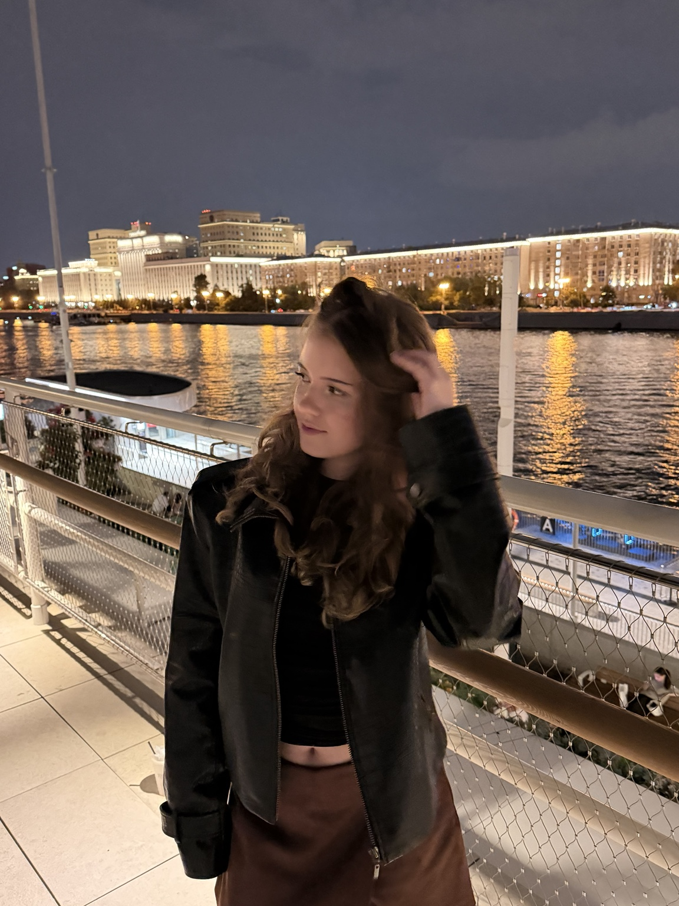
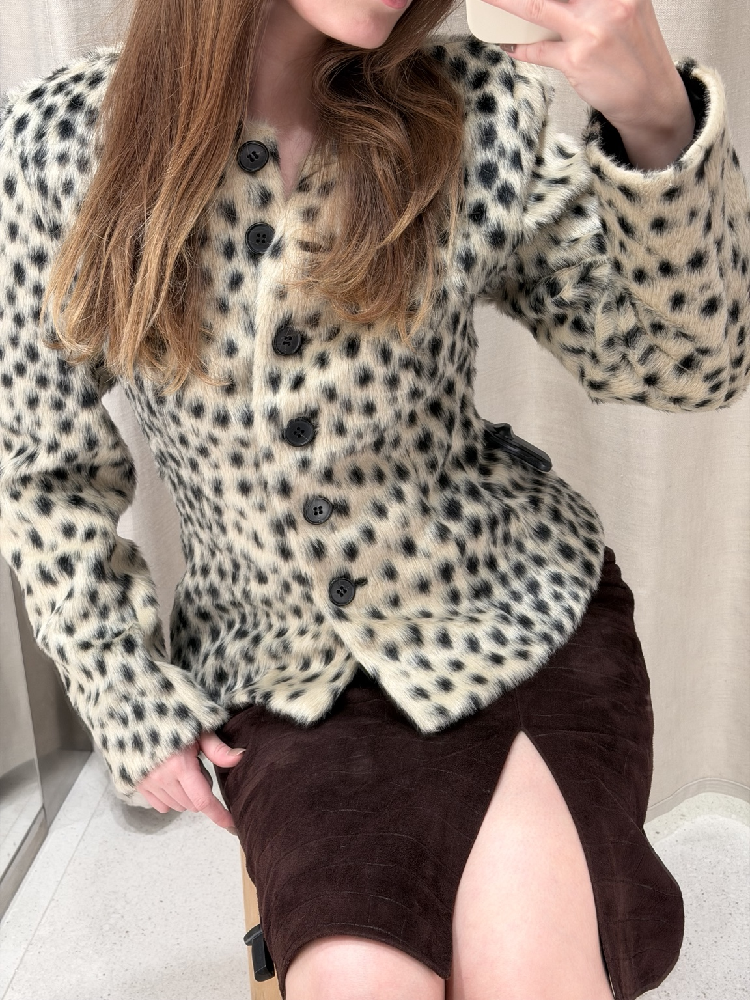
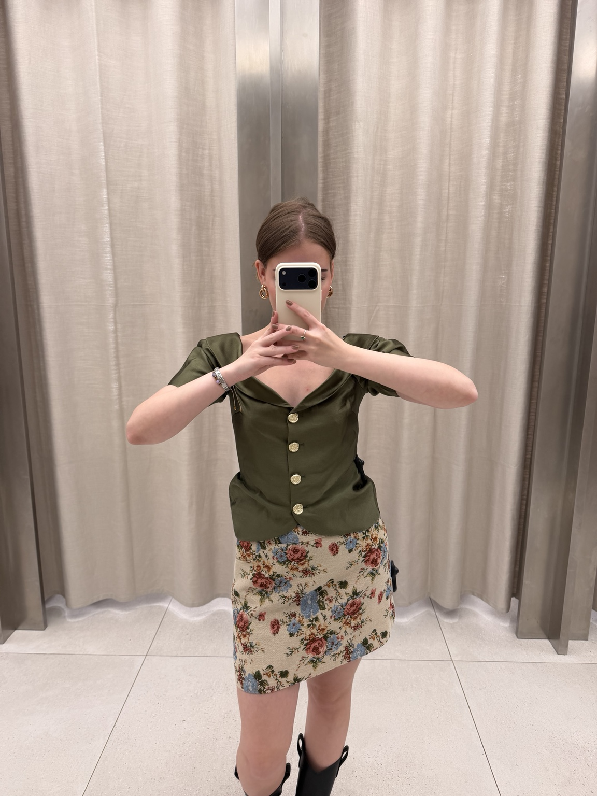
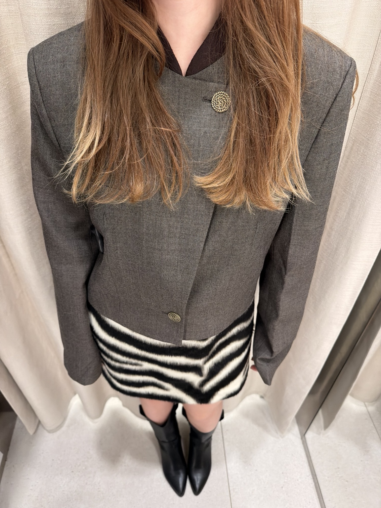
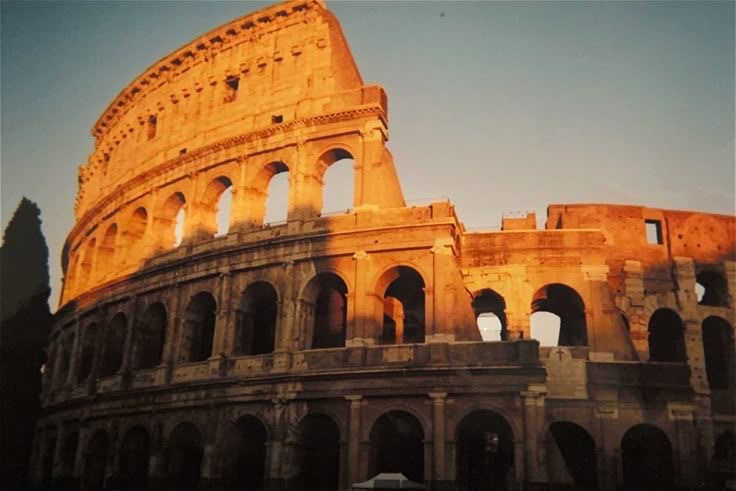
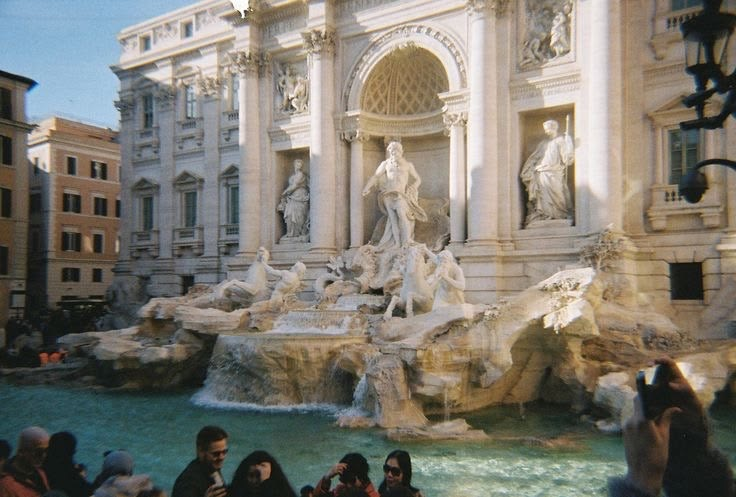

Привет! Я Варя
Мне 18 лет, я из Твери. Здесь я хочу немного рассказать о себе, своих увлечениях и планах.
Сейчас я учусь в Московском Политехе на направлении «Прикладная информатика». Мой профиль — «Разработка и интеграция бизнес-приложений». Параллельно работаю в SMM.

Мои интересы
Мне очень нравится мода. Люблю смотреть, как другие сочетают вещи, и самой придумывать образы. Особенно интересно подобрать к одной вещи что-то разное и посмотреть, как она будет выглядеть. Вот несколько моих образов:



Ещё люблю фильмы и сериалы — могу просто провести вечер за просмотром. Но не всё свободное время провожу дома: мне также нравится ходить в спортзал.
И, конечно, я люблю готовить. Для меня это не только повседневное дело, но и занятие в удовольствие.
Несколько фактов обо мне
| Обо мне | Подробности |
|---|---|
| Чем занималась раньше | Иностранные языки, плавание и музыкальная школа |
| Любимая кухня | Итальянская и азиатская |
| Мой питомец | У меня есть собака породы ши-тцу по кличке Джеймс |
| Любимые цвета | Тёмно-синий и коричневый |
| Любимый фильм | «Бойцовский клуб» |
| Любимая книга | «Маленькие женщины» |
Моя мечта
Очень хочу путешествовать по миру. Больше всего пока мечтаю об Италии. Хочется погулять по Риму и увидеть места, которые сейчас рассматриваю на фотографиях. Надеюсь, однажды у меня появятся свои снимки оттуда!

